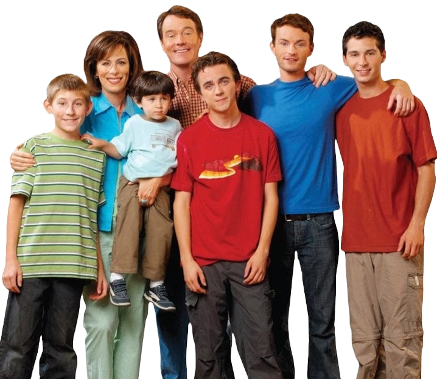

Malcolm In The Middle
Malcolm in the Middle, creada por Linwood Boomer, es una serie de televisión que se emitió desde 2000 hasta 2006, destacándose por su enfoque fresco y cómico en la vida familiar. La narrativa sigue las desventuras de la familia Wilkerson, particularmente del hijo intermedio, Malcolm, quien posee habilidades intelectuales excepcionales. La serie se destacó por su estilo de comedia único, narrativa no convencional y personajes memorables, ofreciendo una visión humorística pero auténtica de las complejidades de la vida cotidiana.
La familia Wilkerson, encabezada por los padres Lois (interpretada por Jane Kaczmarek) y Hal (interpretado por Bryan Cranston), rompe con los estereotipos tradicionales de la vida familiar en la televisión. Lois es una madre fuerte y autoritaria, mientras que Hal es un padre amoroso pero algo torpe. La serie introduce a los hijos: Francis (interpretado por Christopher Masterson), el hijo mayor; Reese (interpretado por Justin Berfield), el siguiente en la línea; Malcolm (interpretado por Frankie Muniz), el hijo intermedio con habilidades intelectuales sobresalientes; Dewey (interpretado por Erik Per Sullivan), el hermano más joven; y eventualmente, Jamie.
La premisa de Malcolm in the Middle es única al centrarse en Malcolm, un adolescente con un coeficiente intelectual extremadamente alto, mientras lidia con las dinámicas familiares caóticas y a menudo cómicas. A diferencia de las típicas representaciones de niños prodigios en los medios, Malcolm no es un estudiante modelo y su inteligencia a veces crea más problemas que soluciones. La serie utiliza la voz en off de Malcolm para ofrecer comentarios sarcásticos y reflexivos sobre su entorno, añadiendo una capa adicional de humor.
El tono de la serie es caótico y divertido, reflejando la realidad de la vida familiar. Los Wilkerson enfrentan situaciones extravagantes, desde problemas escolares hasta intentos de criar a sus hijos en medio del caos diario. La serie aborda temas familiares universales, como la crianza de los hijos, las luchas financieras y las relaciones entre hermanos, pero lo hace con un giro cómico que la distingue.
Un elemento distintivo de Malcolm in the Middle es su estilo de comedia visual y física. Hal, por ejemplo, es conocido por sus torpezas cómicas y su inclinación por participar en actividades inusuales. Las travesuras de Reese y las estrategias creativas de Malcolm para enfrentar los desafíos también contribuyen a la comedia física de la serie. La habilidad del elenco para ejecutar el humor físico y el diálogo rápido fue un factor clave en el éxito de la serie.
¿Quieres saber más?
¿Qué personaje de Malcolm in the Middle eres?
¡Haz el test ahora!